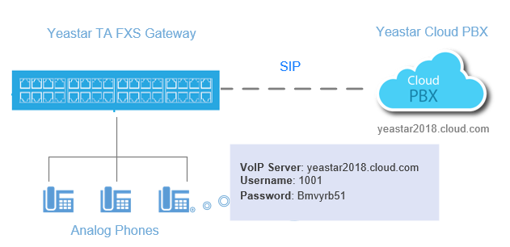
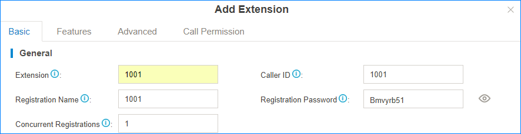
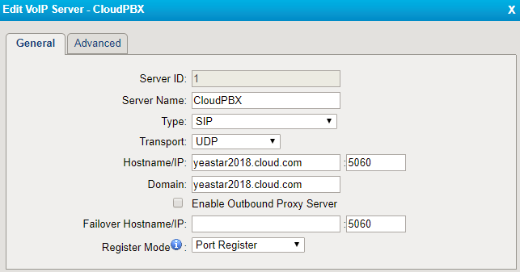
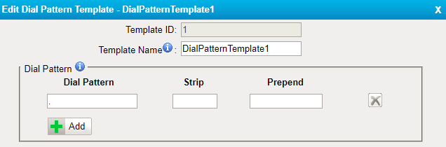
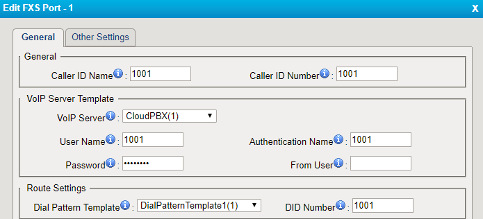
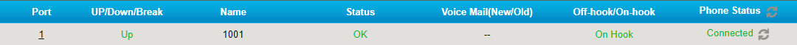
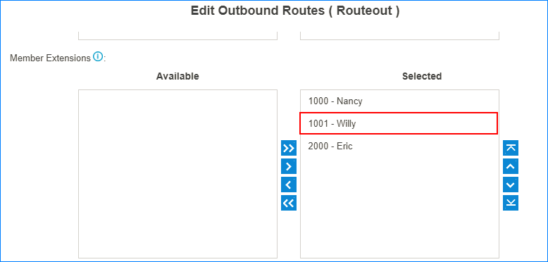
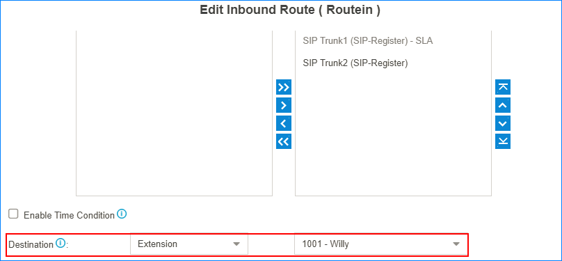

Interconnect Yeastar Cloud PBX and TA FXS Gateway
Interconnect Yeastar Cloud PBX and Yeastar TA FXS gateway to extend analog phones.
In the topic, we tested with Yeastar Cloud PBX version 81.4.0.10 and Yeastar TA3200 version 40.19.0.30.
After connecting the Yeastar Cloud PBX and the Yeastar TA FXS gateway, you can achieve the followings:
- Make calls between the analog phones and the SIP extensions of the PBX
- Receive inbound calls on the analog phones
- Use the PBX's trunk to make outbound calls from the analog phones
- Make calls between analog phones

1. Create an extension on the PBX
Log in the PBX web interface, go to , create one extension.You will use this extension to register on the FXS port of TA3200 later.

2. Configure a VoIP Server on TA3200
Log in the TA3200 web interface, go to , set a VoIP Server.

- Server Name: Set a name to help you identify the VoIP server.
- Type: Choose
SIP. - Transport: Choose
UDP. - Hostname/IP: Enter the domain name of your PBX and the SIP registration port.
- Domain: Enter the domain name of your PBX.
- Register Mode: Choose
Port Register.
3. Set a Dial Pattern Template on TA3200
Go to , edit one template according to your needs.
The default dial pattern allows you to call any number.

4. Edit FXS port of TA3200
Go to , register one FXS port as the SIP extension of the PBX.

- Caller ID Name: Set a name to help you identify the FXS port.
- Caller ID Number: Enter the SIP extension number.
- VoIP Server: Choose the VoIP server that is for the PBX.
- User Name: Enter the SIP extension number.
- Authentication Name: Enter the registration name of the SIP extension.
- Password: Enter the registration password of the SIP extension.
- Dial Pattern Template: Choose the dial pattern template that will be applied to the FXS port.
- DID Number: Enter the SIP extension number.
5. Check the status of the FXS port
Go to to check the status of the FXS port.
If the Status shows "OK", the FXS port is registered as the SIP extension of the PBX.
You can make internal calls between the analog phones and the extensions of the PBX now.

6. Set outbound call permission for the FXS port
To make outbound calls from the analog phone, you need to set call permission for the SIP extension that is registered on the FXS port of TA3200.
- Log in the PBX web interface, go to , edit your outbound route or add a new outbound route for the FXS port.
- Select the SIP extension that is registered on the FXS port to the
Selected box.

7. Set inbound call permission for the FXS port
To receive inbound calls on the analog phone of TA3200, you need to check if the SIP extension that is registered to the FXS port is reachable through an inbound route.
You can set the destination to the SIP extension, IVR, ring group, or queue that contains the SIP extension.
